install.packages(c("phylospatial", "nullcat", "ggplot2", "tidyterra", "patchwork",
"prioritizr", "highs"))
# ps_dissim_focal() (section 5) needs the development version:
# install.packages("pak"); pak::pak("matthewkling/phylospatial")Spatial phylogenetics with {phylospatial}
ESA Statistical Ecology / EFI webinar series
Matthew Kling
November 2, 2026
Follow along
- Download files: https://github.com/eco4cast/Statistical-Methods-Seminar-Series/tree/main/kling-phylospatial
- Install packages:
Roadmap
- Concepts
- Data
- Diversity
- Significance
- Turnover
- Prioritization
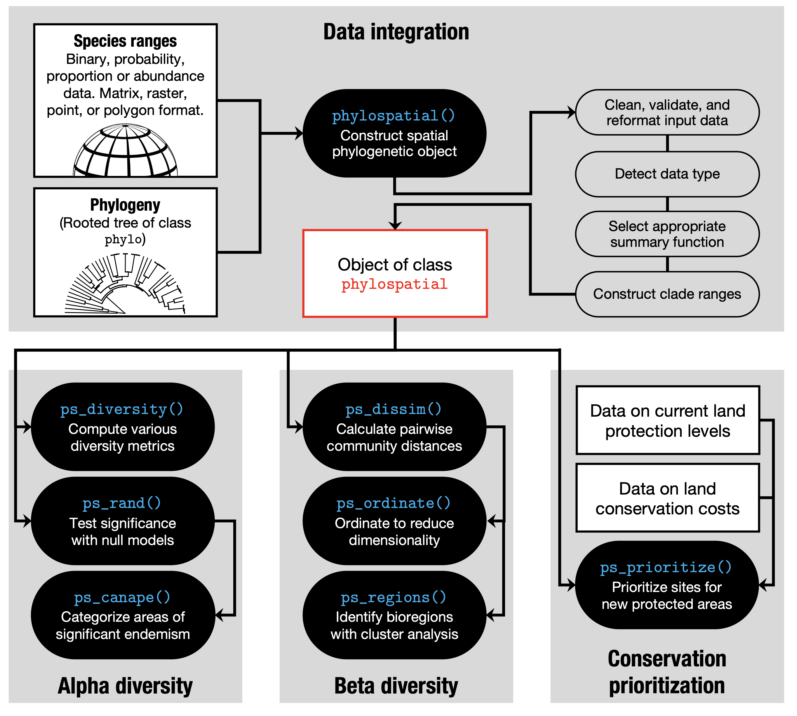
1. Concepts
What is spatial phylogenetics?
Mapping the distribution of evolutionary history across landscapes, by combining a phylogeny with species distributions.
- Where is evolutionary diversity concentrated?
- Where are old or young lineages restricted?
- How does lineage composition change across space?
- Where should we protect it?
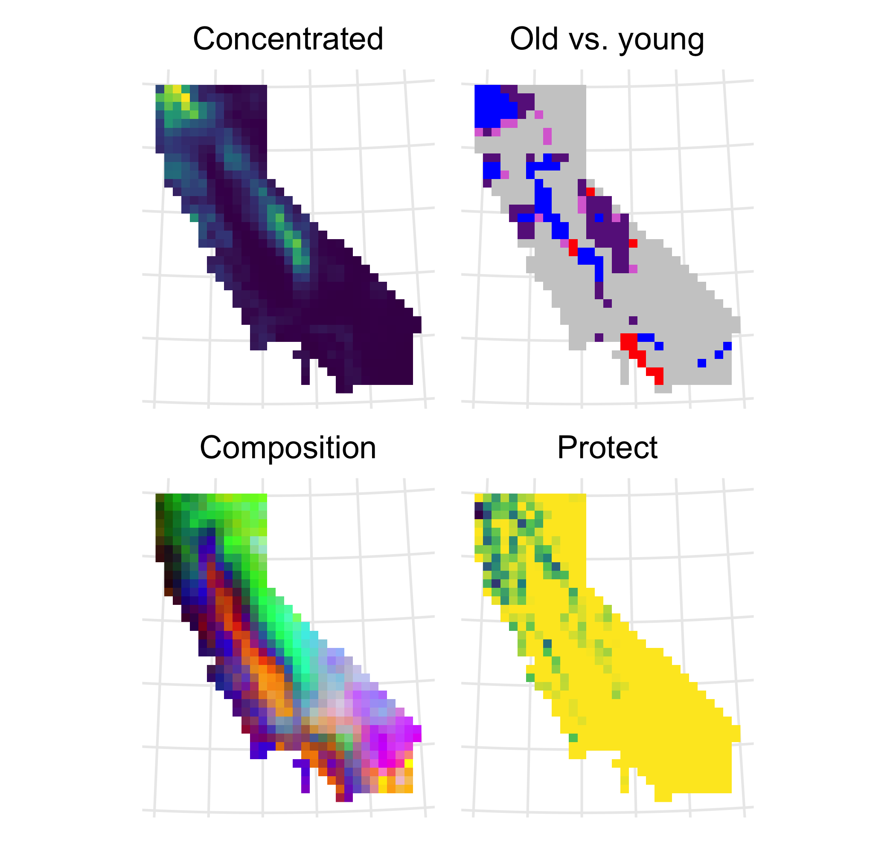
Why measure biodiversity using phylogeny?
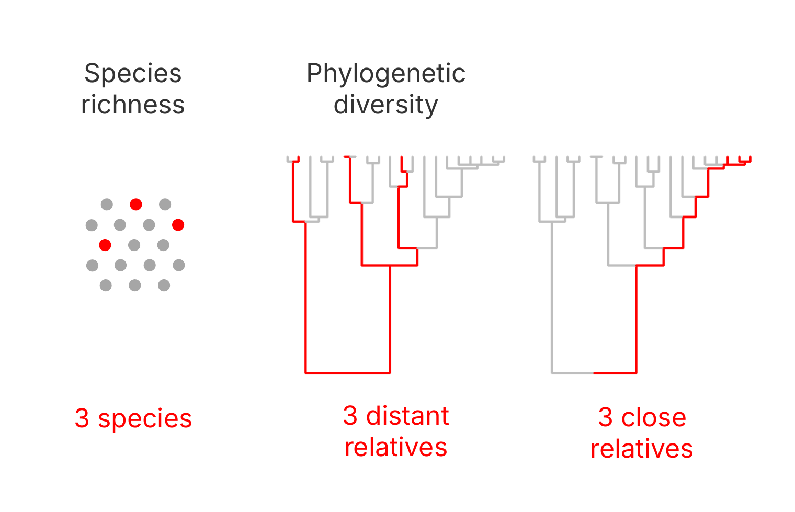
Why measure biodiversity using phylogeny?
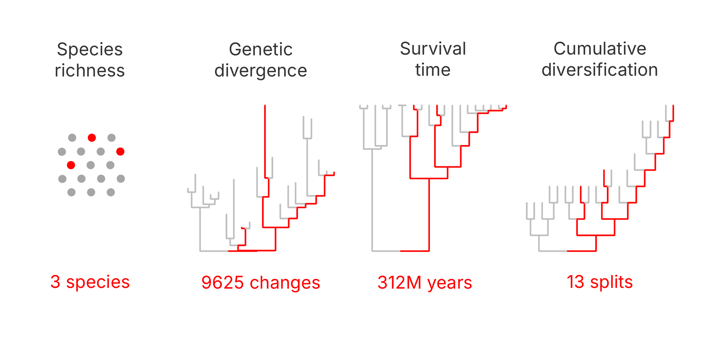
Most phylodiversity metrics are familiar ones, applied to branches
| Species-level | Branch-level |
|---|---|
| Richness: count of species | PD: total branch length present |
| Weighted endemism: species weighted by 1 / range size | PE: branch length weighted by 1 / range size |
Common misconceptions
| Misconception | Reality |
|---|---|
| Counting clades as well as species double-counts occurrences | Each branch counts once, weighted by its own length: a clade adds only the history unique to it |
| Clade ranges are reconstructed ancestral ranges | They are where a clade’s living descendants occur today |
| High phylogenetic endemism means old lineages | PE mixes branch length and range size; CANAPE separates neo- from paleo-endemism |
Every clade has a range
A branch occurs wherever any of its descendants occurs.
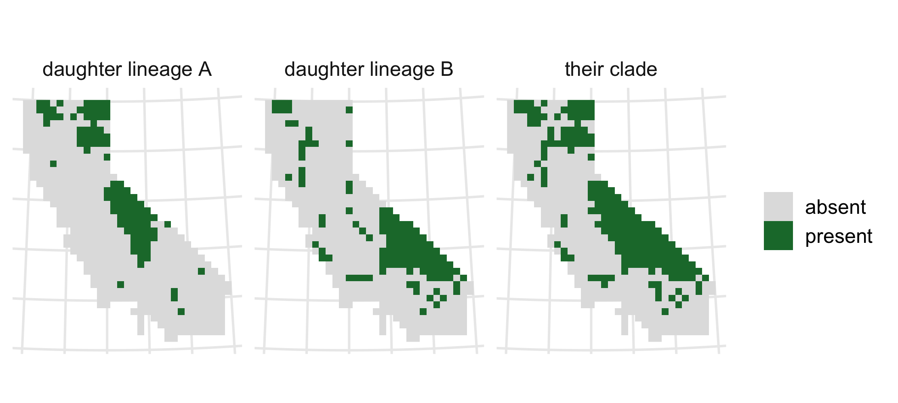
Ranges don’t have to be binary
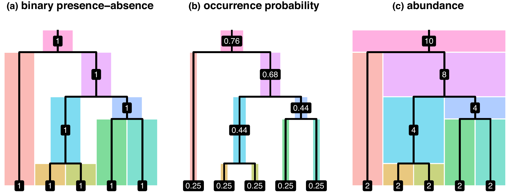
A clade’s value comes from its members: present if any are (binary), P = 1 − ∏(1 − pi) (probability), or the sum (abundance).
Quantitative measures paint richer pictures
Thresholded ranges
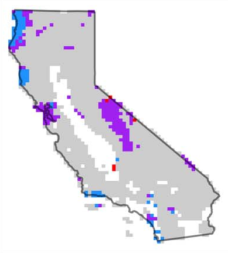
Continuous ranges
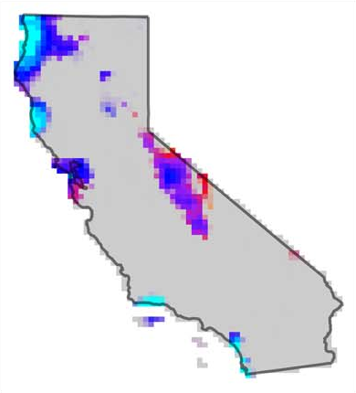
Moss neo- and paleo-endemism (Kling et al. 2026, Systematic Botany).
The phylospatial package
Spatial phylogenetic analysis in R, from data to conservation priorities
- Quantitative data throughout: binary, probability, or abundance ranges
- Spatial in and out: {terra} rasters, {sf} polygons, or plain matrices
- One object, many analyses: diversity, null models, turnover, prioritization
- Builds on {ape}, {vegan}, {nullcat}, {prioritizr}
On CRAN · Kling (2025) Methods in Ecology and Evolution

Other options for PD analyses in R
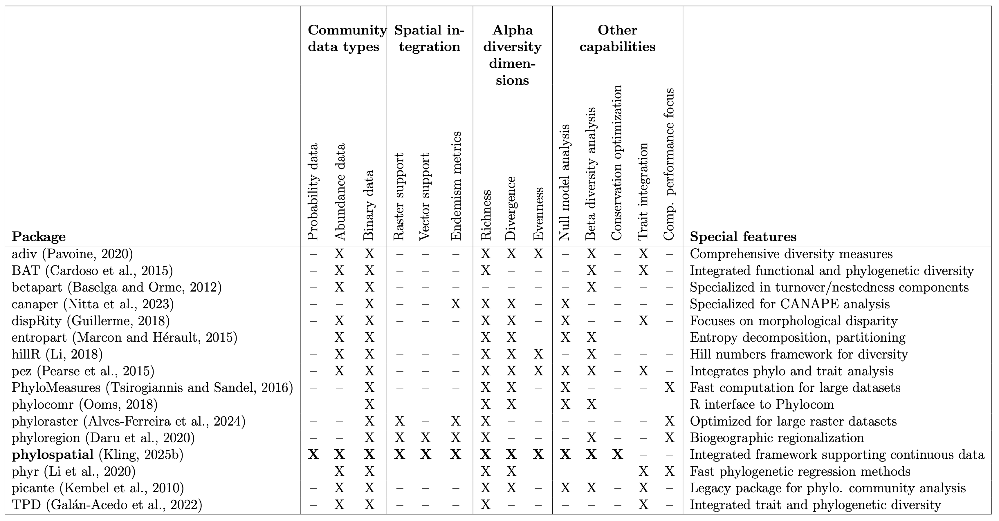
Many R packages compute PD across sites (Kling 2025, MEE, Table 1)
2. Data
Two ingredients
phylospatial() combines a tree and community data into one object, building a range for every branch.
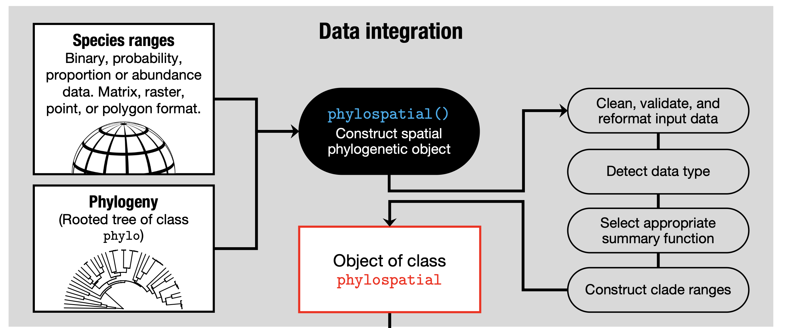
A toy dataset in one line
ps_simulate() generates a random dataset, useful for learning and testing.
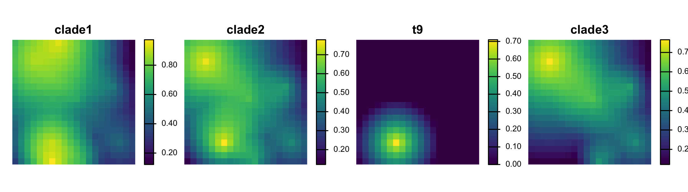
From occurrence points to a grid
ps_grid() turns occurrence records into an equal-area community grid. Raw records reflect sampling effort; modeled ranges smooth it out.
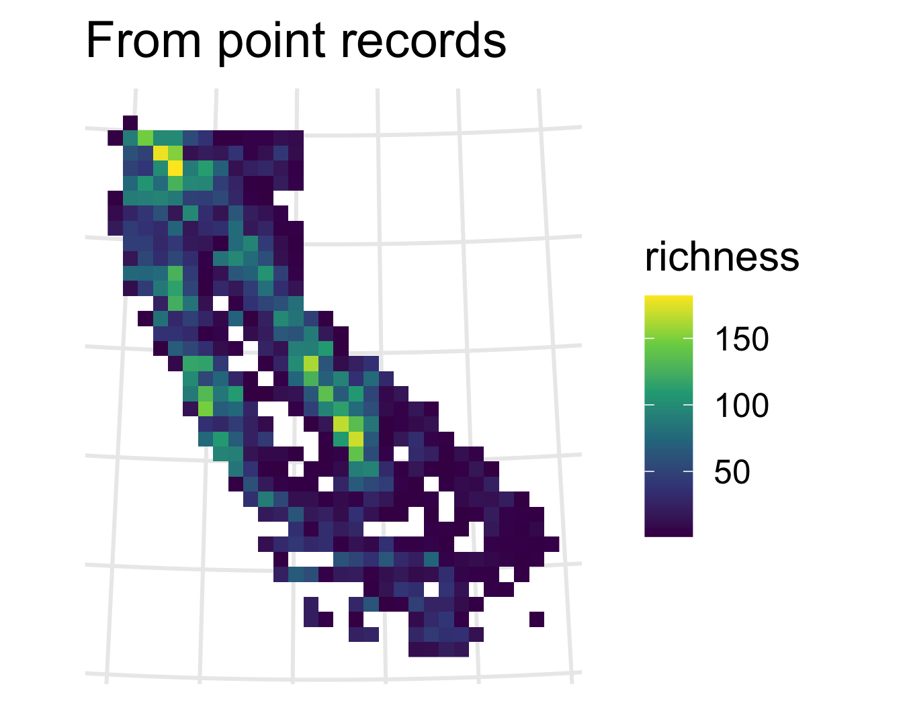
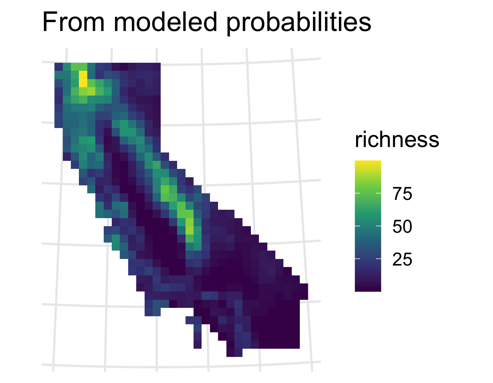
Building the moss dataset
443 California moss species: occurrence probabilities from species distribution models on a 30 km grid, plus a phylogeny (Kling et al. 2026, Systematic Botany). Both ship with the package; moss() is a one-line shortcut for the code below.
Community data type detected: probability`phylospatial` object
- 884 lineages across 527 occupied sites (1116 total)
- community data type: probability
- branch length rescaling: sum1
- site weights: equal
- spatial data class: SpatRaster
- dissimilarity data: none Inside a phylospatial object
List of 10
$ comm : num [1:527, 1:884] 0.0154 0.0271 0.0582 0.2086 0.2531 ...
..- attr(*, "dimnames")=List of 2
$ tree :List of 4
..- attr(*, "class")= chr "phylo"
..- attr(*, "order")= chr "cladewise"
$ spatial :S4 class 'SpatRaster' [package "terra"]
$ occupied : int [1:527] 1 2 3 4 5 6 7 8 9 10 ...
$ n_sites : int 1116
$ site_weight: NULL
$ data_type : chr "probability"
$ clade_fun :function (x)
..- attr(*, "srcref")= 'srcref' int [1:8] 129 30 129 56 30 56 3623 3623
.. ..- attr(*, "srcfile")=Classes 'srcfilealias', 'srcfile' <environment: 0x904b597e0>
$ rescale : chr "sum1"
$ dissim : NULL
- attr(*, "class")= chr "phylospatial"3. Diversity
Diversity and endemism metrics
ps_diversity() computes various measures of richness, divergence, and regularity, each in phylogenetic and species-level variations (?ps_diversity for the full list).
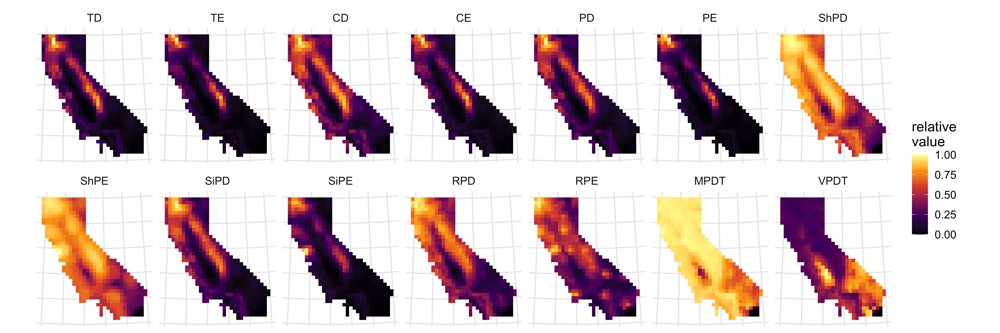
Richness: species richness, PD, and PE
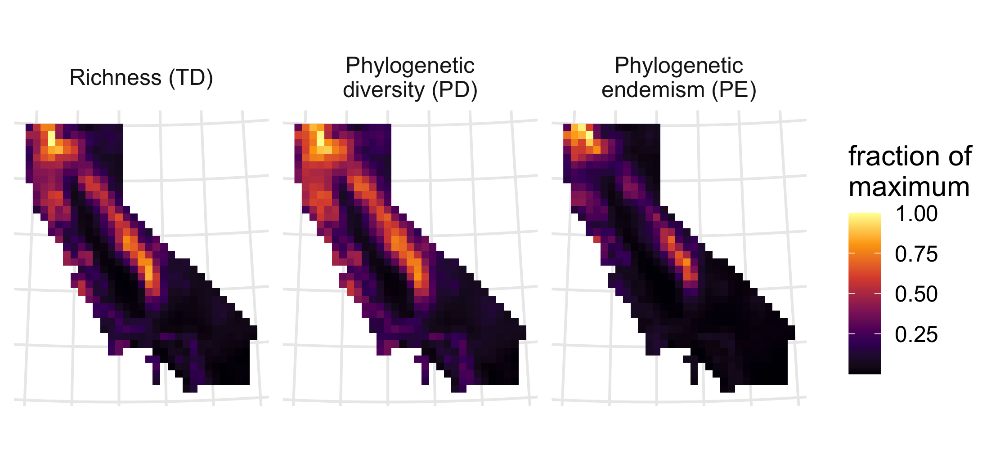
Each map scaled to its maximum. PD closely tracks richness; PE shifts weight toward places where range-restricted lineages concentrate.
Divergence and regularity
Beyond how much evolutionary history a site holds, ps_diversity() measures how it’s structured. Divergence (MPD): how distantly related co-occurring lineages are, on average. Regularity (VPD): how evenly spaced they are across the tree; low variance means evenly spaced lineages, high means clumped clusters of close relatives.
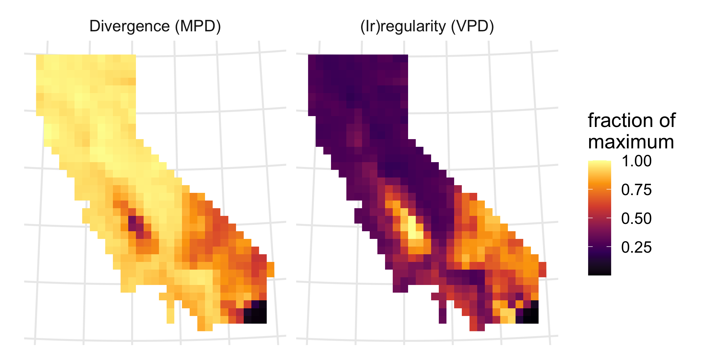
Which part of evolutionary history?
Recall that branch lengths can measure divergence, time, or diversification events. Tree scaling functions change which of those, and which part of history, the metrics weigh. Put the result in ps$tree and every metric follows.
tr <- rescale_tree(ps$tree, "tip1") # root-to-tip height = 1
slice_tree(tr, min = 0.5) # older half only
slice_tree(tr, max = 0.5) # recent half only
delta_tree(tr, delta = 0.3) # emphasize deep branches
delta_tree(tr, delta = 3) # emphasize recent branches
uniform_tree(tr) # every branch counts equally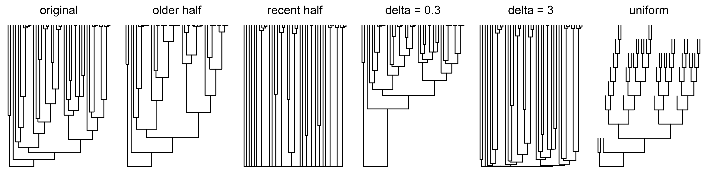
4. Significance
Is there more PD than expected?
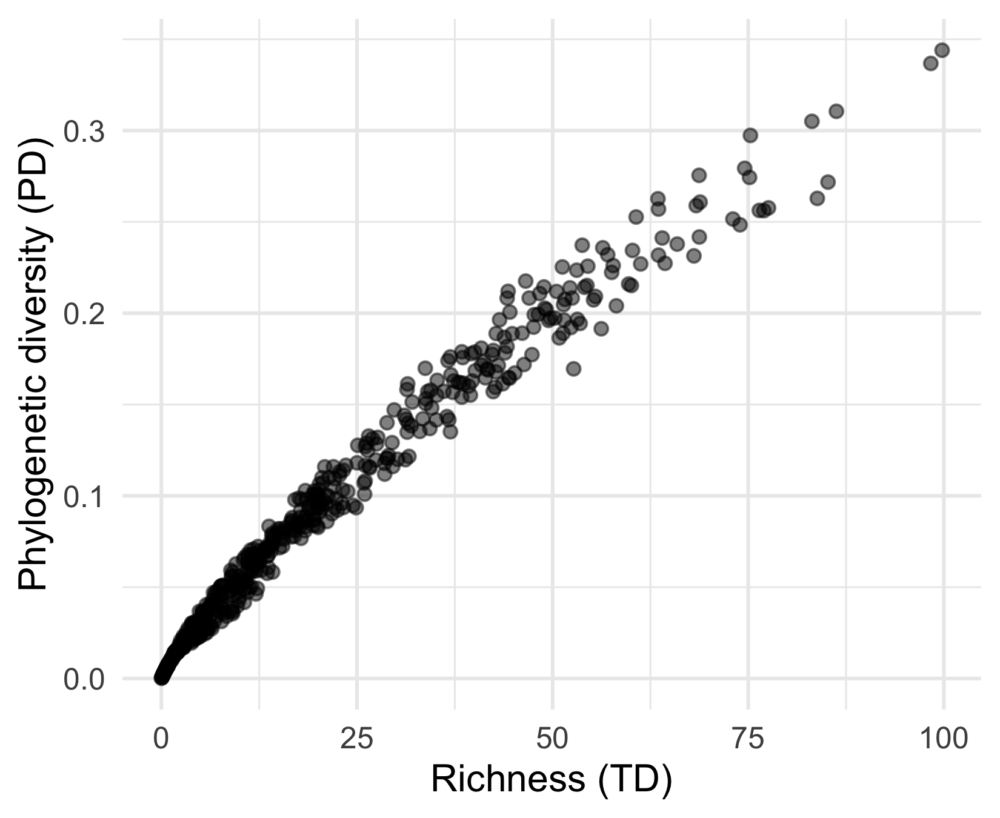
Raw PD mostly tracks richness. To see more, compare each site to a null expectation.
Null models test hypotheses
- Randomize the data many times, holding some features fixed
- Recompute the metric each time
- Compare observed to the null distribution
What you hold fixed defines the hypothesis.
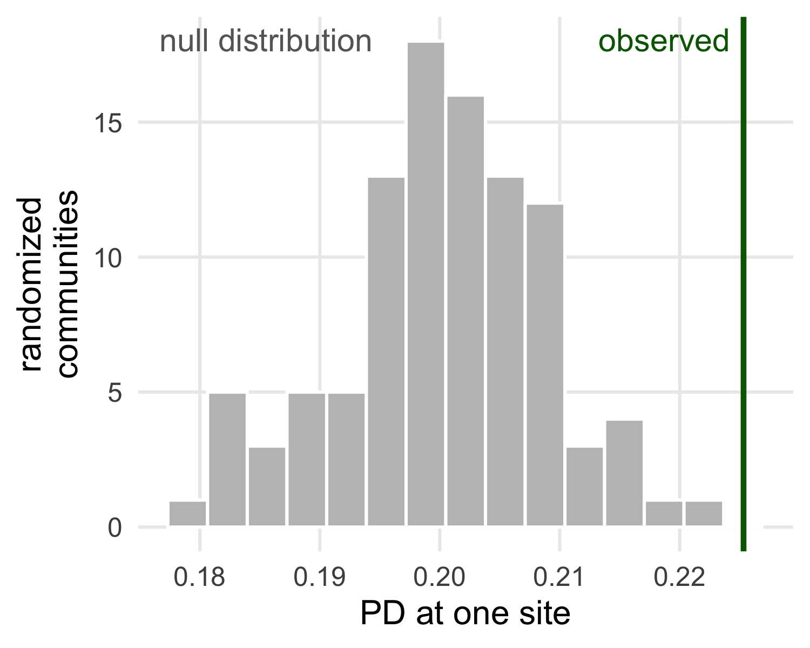
Different nulls, different questions
| Null model | Holds fixed | Randomizes | Is the pattern unusual given… |
|---|---|---|---|
"tip_shuffle" |
every range map | which lineage owns each range | the ranges, ignoring relatedness? |
"curvecat" |
site richness, range sizes | which species occur where | richness and range sizes? |
"r0cat" |
site richness | occurrences, range sizes | richness alone? |
"c0cat" |
range sizes | occurrences, site richness | range sizes alone? |
Matrix algorithms run on binary data (fun = "nullcat") or quantitative data (fun = "quantize"); fun = "nullmodel" adds {vegan}’s options.
Randomizing quantitative data
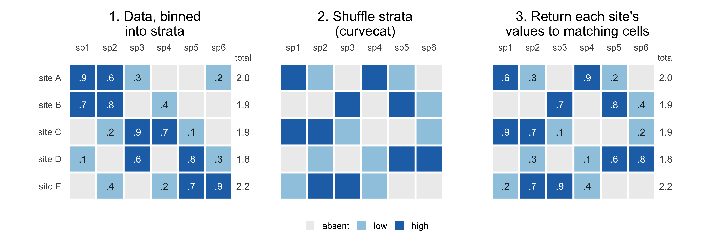
Each site keeps its values; each species keeps its mix of strata. quantize() from {nullcat}
How many iterations?
Swap-based nulls need enough swaps to forget the original data. ps_suggest_n_iter() runs several chains and suggests a burn-in, the minimum n_iter per null community.
Real analyses: n_iter = iters, n_rand = 1000.
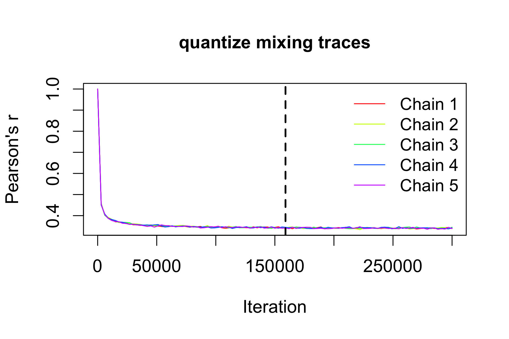
Running a randomization
ps_rand() compares each site’s metrics with randomized communities, returning a null quantile per site: green = more than expected, purple = less.
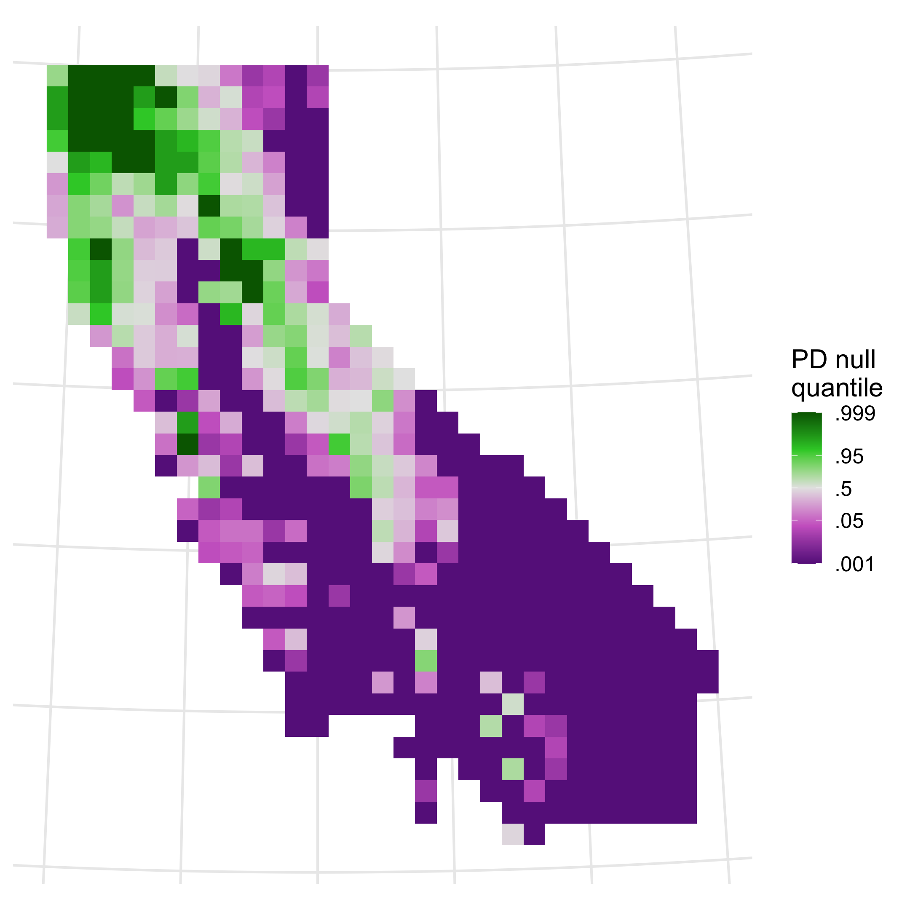
Neo- and paleo-endemism (CANAPE)
ps_canape() classifies sites as centers of neo-, paleo-, mixed, or super-endemism, from the significance of PE, RPE, and CE in a randomization (Mishler et al. 2014).
- Neo-endemism: concentrations of short, range-restricted branches
- Paleo-endemism: concentrations of long, range-restricted branches
- Patterns of where restricted lineages are today, not a direct test of how they got there
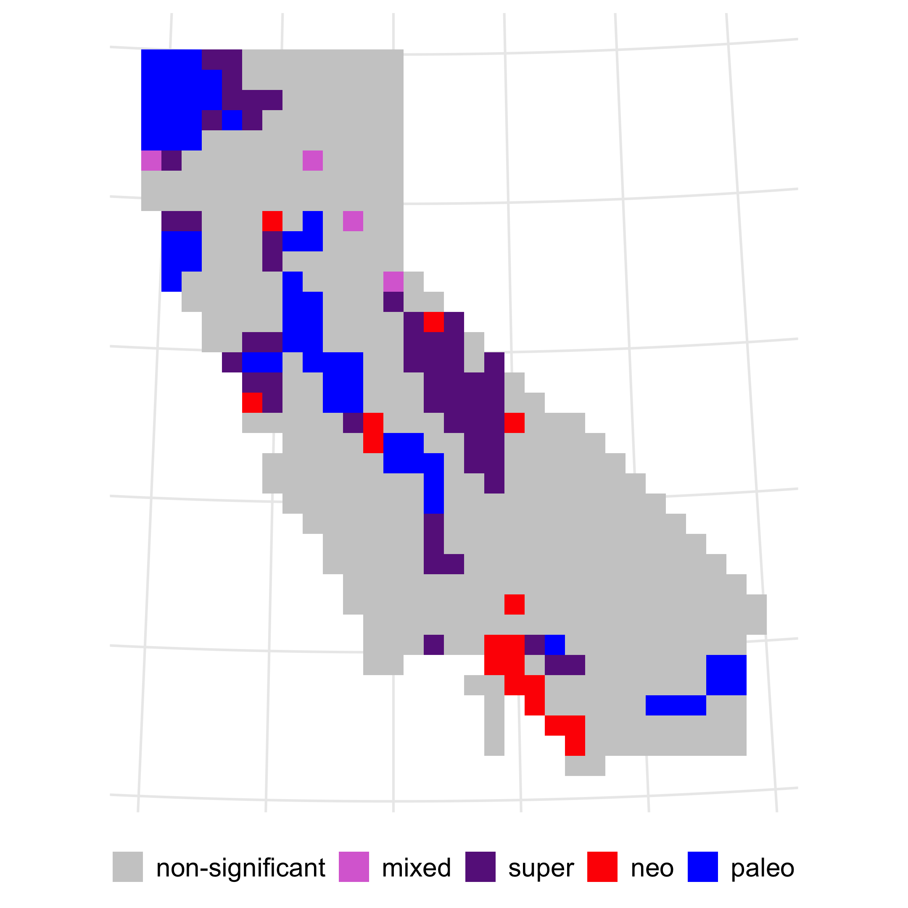
5. Turnover
What does phylogenetic turnover measure?
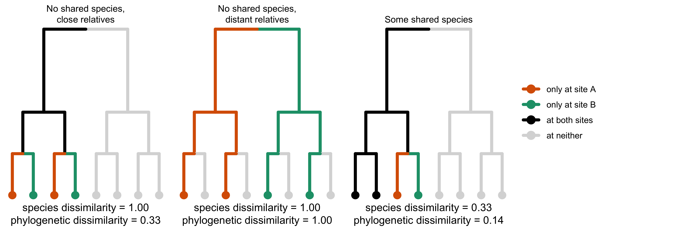
Phylogenetic dissimilarity is the share of branch length not shared by two sites. Species turnover treats every pair of different species as equally different; phylogenetic turnover is low when sites hold close relatives, and high when they hold distant lineages.
Dissimilarity from a focal site
ps_dissim_focal() maps how different every other site is from a focal location. Here, sites in the Sierra Nevada and the Mojave Desert.
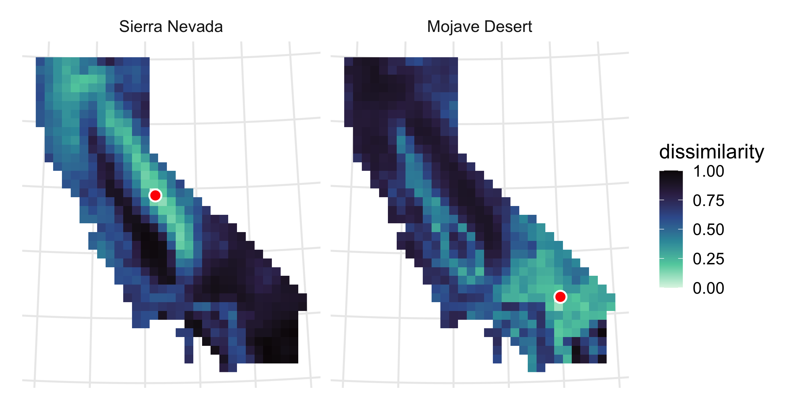
Many kinds of dissimilarity
A wide range of dissimilarity measures are available, including any {vegan} index and the turnover and nestedness components of Sorensen (Baselga & Orme 2012).
sierra <- focal[1, ]
ps_dissim_focal(ps, sierra, method = "sorensen") # default
ps_dissim_focal(ps, sierra, method = "sorensen_turnover") # lineage replacement
ps_dissim_focal(ps, sierra, method = "sorensen_nestedness") # richness differences
ps_dissim_focal(ps, sierra, endemism = TRUE) # weight range-restricted branches
ps_dissim_focal(ps, sierra, normalize = TRUE) # proportional composition
ps_dissim_focal(ps, sierra, tips_only = TRUE) # species only, no tree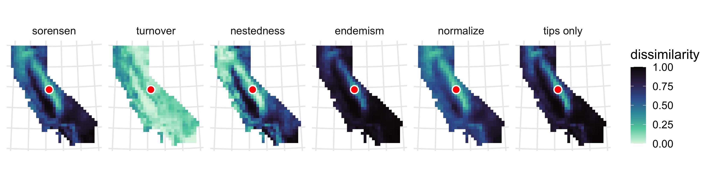
An asymmetric index
method = "focal_difference" is the share of the focal site’s branch length missing from each other site. Unlike Sorensen, it ignores lineages the focal site lacks, so it shows where a site’s own lineages occur. For the lineage-poor desert site, they occur almost everywhere.
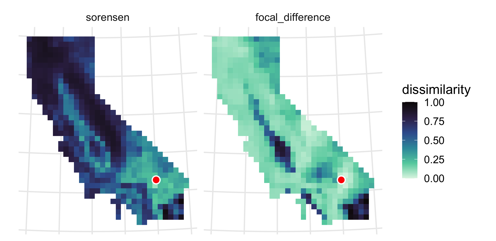
All pairs of sites
Using the dissimilarity matrix
ps$dissim is an ordinary dist object, so any distance-based method applies:
- Mantel tests against geographic or environmental distance
- What drives turnover: GDM ({gdm})
- Group differences: PERMANOVA (
adonis2()) - Ordination and color (
ps_ordinate(),ps_rgb()) - Regionalization (
ps_regions())
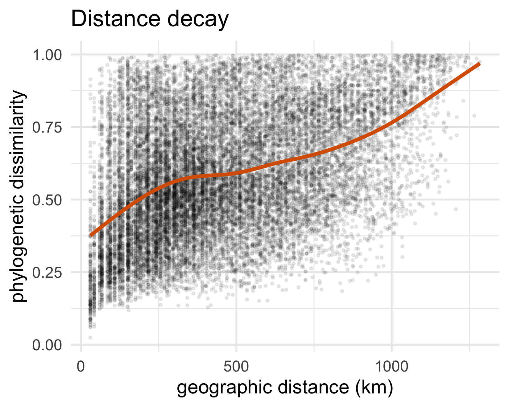
Ordination
ps_ordinate() reduces the dissimilarity matrix to a few axes that capture the main gradients in lineage composition (classical or nonmetric multidimensional scaling, or PCA).
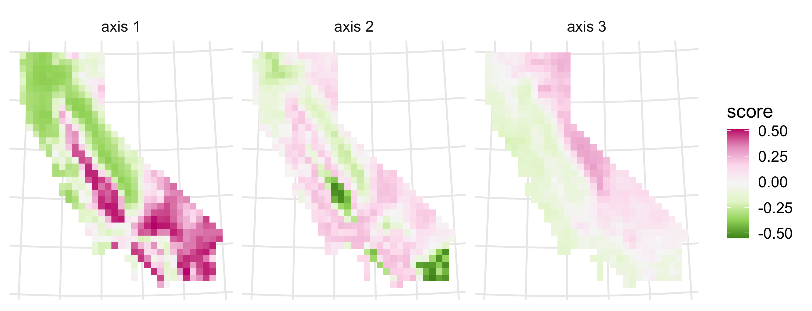
Mapping turnover as color
Phylogenetic regions
6. Prioritization
What is conservation prioritization?
Choosing where to add new protection, given limited resources.
- Complementarity: a site’s value depends on what’s already protected and what other chosen sites already cover
- Efficiency: maximize biodiversity gained per unit cost
- Targets or benefits: aim to protect a set share of each feature’s range, or maximize total benefit with diminishing returns
In phylospatial, the “features” are branches of the tree, so priorities favor sites that add evolutionary history not yet represented in protected areas.
Prioritization inputs
Existing protection (init, from 0 to 1) and the relative cost of protecting each site, both on the moss grid (ext is the package data folder from earlier).
Diminishing returns
A priority ranking
How much does each step buy?
Optimal solutions with {prioritizr}
ps_prioritizr() builds a {prioritizr} problem in which every branch is a feature with a range-protection target. A solver (e.g., {highs}) then finds the cheapest set of new sites that meets every target, rather than a ranking.
- Add any prioritizr constraints, penalties, or solvers
- See the earlier {prioritizr} webinar in this series
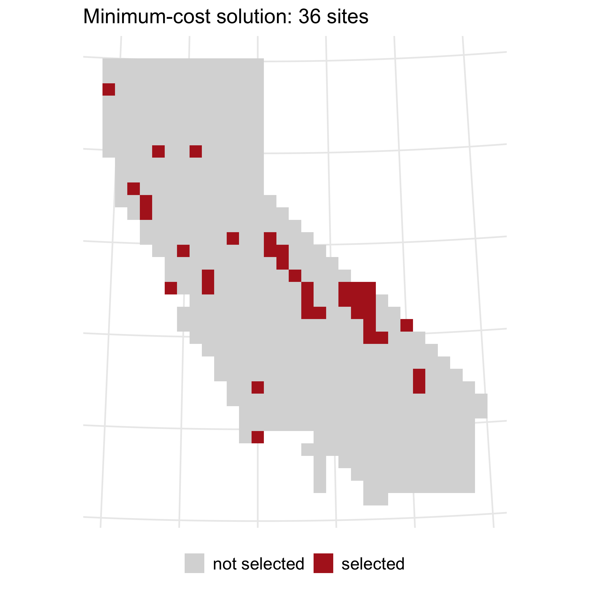
Wrap-up
Flexible inputs. One object. Many analyses.
Thank you!
- Package website and vignettes: https://matthewkling.github.io/phylospatial/
- Code and issues: https://github.com/matthewkling/phylospatial
- Kling (2025) Methods in Ecology and Evolution: https://doi.org/10.1111/2041-210X.70056
- Kling et al. (2026) Systematic Botany: https://doi.org/10.1600/036364426X17703284494638
- Contact: matthew.kling@umontana.edu
Questions?